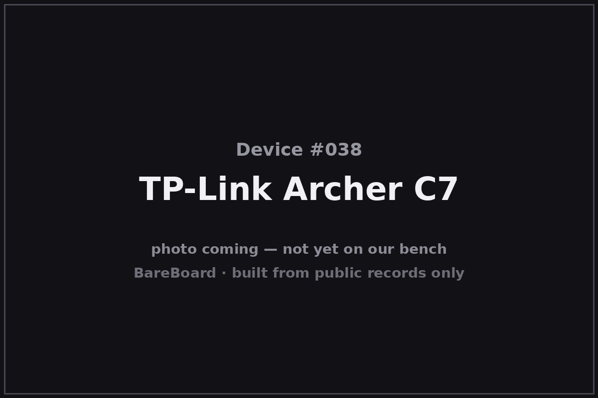

The Autopsy Report · Device #038
The TP-Link Archer C7
The people's 802.11ac router — cheap, fast, everywhere, and the board that taught a generation of hobbyists what OpenWrt feels like.
What is this thing?
The TP-Link Archer C7 is a dual-band 802.11ac (“Wi-Fi 5”) router rated AC1750 — up to 450 Mbps on 2.4 GHz plus 1300 Mbps on 5 GHz — with five gigabit Ethernet ports and two USB 2.0 ports. Announced in 2013 as TP-Link's play for online gaming and HD video streaming, it became famous for a different reason: it was inexpensive, widely available, and one of the best-supported OpenWrt targets of its generation. TechPowerUp (announcement)
This report pins its primary evidence to hardware version 2, covered by FCC ID TE7C7V2. Later versions (v4/v5 and beyond) are different hardware. FCC filing
Not on our bench (yet)
This device is not on our bench. We have never owned, opened, photographed, measured, or powered on the Archer C7. Everything in this report comes from public records: government filings, manufacturer documents, manuals, and credible public teardowns and hardware databases. Where a fact would require holding the hardware in our hands — our own photos, our measurements, our boot logs, the exact board revision of a future unit — we say so, out loud, and mark it unknown. Nothing here is presented as first-hand BareBoard evidence.
That constraint is also the point: you can learn a remarkable amount about a device without ever touching it, because the public record is deep. What follows is everything the record could tell us — and an honest map of where the record runs out.
A short history
- 2013TP-Link announces the Archer C7 — dual-band 802.11ac, gigabit Ethernet, pitched at gaming and HD video. TechPowerUp
- 2014-04-14The FCC grants equipment authorization TE7C7V2 to TP-Link Technologies Co., Ltd. for the Archer C7 v2 — this report's primary evidence. FCC filing
- 2014–2017The C7 becomes a default OpenWrt machine: cheap, available everywhere, and well-documented. The v2's TFTP recovery mode — documented in public third-party writeups — makes firmware experiments survivable. FCC filing Austin Jadams (TFTP recovery)
- 2016–2017Later changes to the authorization are filed; subsequent hardware versions (v4, v5…) move to different designs. The v2 remains the community's reference board. FCC filing
The outside
The Archer C7 v2 is a glossy black box with three tall external antennas and a front row of green status LEDs — power, system, 2.4 GHz, 5 GHz, WAN, LAN, USB, and WPS. The rear carries four gigabit LAN ports, one gigabit WAN, two USB 2.0 ports, power, the WPS/Wi-Fi buttons, and the recessed reset button. FCC filing

Unremarkable by design: the C7's shell says “appliance,” which is exactly what made it disappear into millions of homes.
The board
The v2 board is an all-Qualcomm-Atheros design: the QCA9558 SoC — a 720 MHz MIPS processor with integrated 2.4 GHz 802.11n radio — running the router, with a separate QCA9880 handling the 5 GHz 802.11ac radio. The FCC filing's public internal photos show the two-radio layout with the 5 GHz section under its shield can. FCC filing
Public third-party writeups document a TFTP recovery mode on the v2 — the bootloader listens for a firmware image over the network when the normal software won't boot — which is why so many bricked-then-rescued C7 stories exist. Austin Jadams (TFTP recovery)
Under the microscope: the chips
What's on the Archer C7 v2 board, per the equipment-authorization exhibits. Confirmed means a primary source — the FCC filing.
| Chip | What it does | How we know | Dig deeper |
|---|---|---|---|
| Qualcomm Atheros QCA9558 | The main SoC — 720 MHz MIPS processor with integrated 2.4 GHz 802.11n radio. | Confirmed Named in the FCC filing's public exhibits for TE7C7V2 (v2). | FCC filing |
| Qualcomm Atheros QCA9880 | The 5 GHz 802.11ac radio (3×3). | Confirmed Named in the FCC filing's public exhibits for TE7C7V2 (v2). | FCC filing |
Flash and RAM part numbers are not verified from the public exhibits we could access. Later hardware versions (v4/v5+) use different silicon and are not covered by this table. No public datasheets were located for these Atheros parts.
The government's file on this box
The government's file on the v2 hardware is public under FCC ID TE7C7V2, granted to TP-Link Technologies Co., Ltd. on April 14, 2014, with later changes filed in 2016 and 2017. FCC filing
- Lab power figures (filing-specific): an initial lower-5-GHz entry of about 47 mW, with later grants including 146 mW upper-5-GHz entries — each tied to its own grant, not blended.
- Scope: v2 only. Later Archer C7 hardware versions are separate designs with their own authorizations.
Browse it yourself: filing page
Service, recovery, and debug modes
We listen, we don't knock: this section documents only that service or recovery modes exist in the public record, and what kind of thing they are — never how to defeat a lock.
Public third-party writeups document a TFTP recovery mode on the Archer C7 v2: with the normal firmware unbootable, the bootloader can accept a firmware image over the local network — the documented escape hatch behind countless “unbricking” stories. Austin Jadams (TFTP recovery) Existence only; we reproduce no procedure.
No manufacturer-published rescue utility was located in the public record for this model; the recovery story here is bootloader behavior documented by third parties.
What the public record shows
Price is a feature. The C7's public record is a story about what happens when capable 802.11ac hardware gets cheap: it becomes the default recommendation, the default OpenWrt target, and the default “my first firmware flash” — a whole generation's hands-on networking education, subsidized by aggressive pricing.
Two radios, two chips, one lesson. The v2's split design — 2.4 GHz integrated in the SoC, 5 GHz on a separate QCA9880 — is visible in the filing photos and explains the board's layout at a glance. Reading a board starts with knowing which chip does what.
Recovery modes make communities. The v2's TFTP recovery didn't just save bricked routers — it lowered the stakes of experimenting, which is why the C7 has one of the richest public firmware-experiment records of any router in this batch.
What we didn't do
- We never had a unit, so we took no photographs and no measurements.
- We never opened an enclosure or lifted an RF shield.
- We never captured a boot log or probed a debug port.
- We never extracted, modified, redistributed, or ran the device's firmware.
- We never defeated a lock, bypassed authentication, or recovered credentials or keys — and we publish none.
- We never tested an exploit or a vulnerability against any device.
- Anything below marked Unknown stays unknown until a unit reaches our bench.
By the numbers
- Device: TP-Link Archer C7 (this report: hardware v2)
- Era: 2013–present (v2 era: 2014–2017)
- FCC ID: TE7C7V2 (TP-Link Technologies; granted 2014-04-14; later changes 2016/2017)
- Wireless: AC1750 — 450 Mbps @ 2.4 GHz + 1300 Mbps @ 5 GHz
- Conducted power (per filing): ~47 mW lower-5 GHz (initial); ~146 mW upper-5 GHz (later grant)
- Main chip: Qualcomm Atheros QCA9558, 720 MHz MIPS
- 5 GHz radio: Qualcomm Atheros QCA9880 (3×3 802.11ac)
- Ports: 4× gigabit LAN, 1× gigabit WAN, 2× USB 2.0
Words to know
Every term this page uses, in plain English. No prior knowledge required.
- AC1750
- A speed class: up to ~450 Mbps on 2.4 GHz plus ~1300 Mbps on 5 GHz, added together for marketing. Real-world speeds are lower.
- TFTP recovery
- A bootloader mode that pulls a firmware image over the local network — a last resort when the normal software won't boot.
- UART / serial console
- A simple port that lets you watch a device narrate its own startup, line by line.
- Unbricking
- Recovering a device whose firmware is damaged — turning a ‘brick’ back into a working device.
- FCC ID
- The ID the FCC assigns to each approved wireless product. Punch it into fccid.io and the whole public filing comes up.
- FCC
- The Federal Communications Commission — the U.S. agency that regulates anything that transmits radio.
Sources & confidence
- FCC equipment authorization TE7C7V2 (grantee TP-Link Technologies Co., Ltd., grant 2014-04-14, later changes 2016/2017; conducted powers ~47/~146 mW per filing): primary evidence for v2. High confidence, v2 only.
- Chip identities (QCA9558, QCA9880): the filing's public exhibits. High confidence, v2 only.
- Launch positioning (gaming/HD video, 2013): TechPowerUp announcement. High confidence in attribution.
- TFTP recovery mode on v2: public third-party writeup (Austin Jadams). Medium confidence; existence only, no procedure reproduced.
- Flash/RAM part numbers not verified from accessible exhibits; stated as a gap.
Anything not listed here is unknown until the bench says otherwise. We'll say so, out loud, when that's the case.
Legal note. BareBoard is an educational project. This page is built entirely from public records — government filings, manufacturer documents, and published third-party research — about hardware we have never possessed. We don't publish, host, or distribute firmware, keys, passwords, or credentials, and nothing here is instructions for defeating a lock or an authentication check. Product names and trademarks belong to their respective owners and appear here only to identify the hardware. If you believe anything here infringes your rights, contact us and we'll address it promptly.